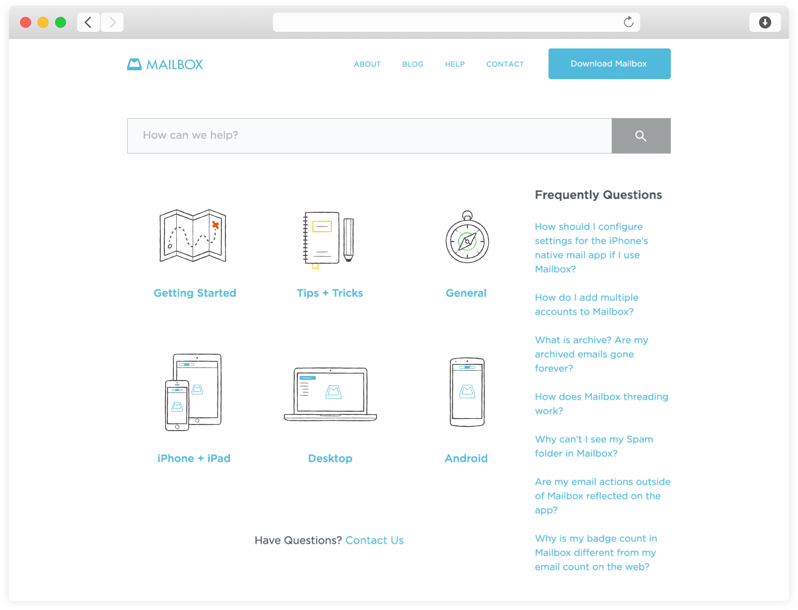
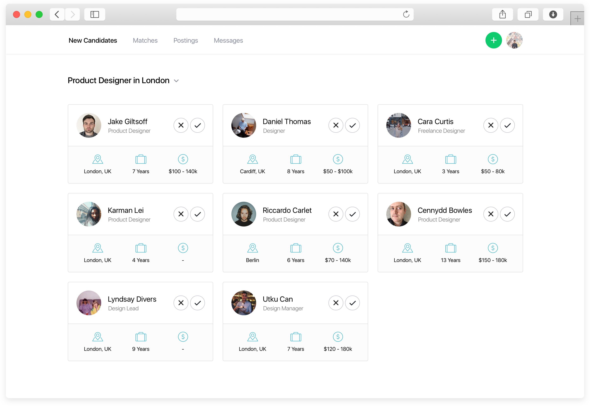

Our role was to lead the re-design and development of the Mailbox help section, to help accommodate for their Mailbox for Mac and Android, and to allow for further language support. We also had the opportunity to help the team out with illustrations and user guides. We went from paper through to prototypes and eventually built the website for Mailbox.
We spent a lot of time creating quick and dirty prototypes to have empathy for people navigating the website for the first time. This is an integral part of our process we carry into the majority of clients (low and high fidelity).
It was a pleasure to work alongside the talented folks at Dropbox and Mailbox, including the talented Ryan Putnam who designed the illustrations you can see throughout the site. Unfortunately Mailbox has since sunsetted, including with the site we built. Here's a video of how the site worked.
